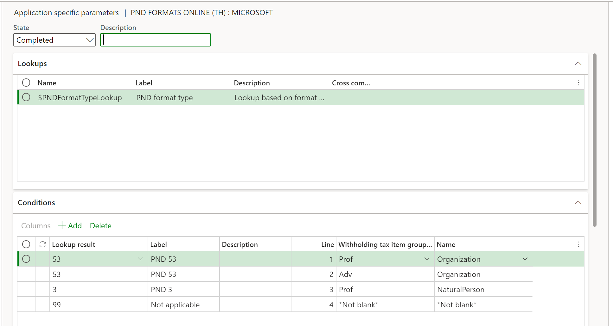

Withholding tax in Thailand
This topic provides information about withholding tax and how to set it up for Thailand. The withholding tax functionality is enhanced for vendor and customer transactions, so that withholding tax is calculated and withholding tax reports are generated.
Set up Thailand withholding tax
Complete the following tasks before you can calculate withholding tax for transactions for a legal entity in Thailand:
- Set up tax registration numbers on the Legal entities page.
- Set up withholding settlement periods on the Withholding tax settlement periods page.
- Set up withholding tax authorities on the Withholding tax authorities page.
- Set up withholding tax codes on the Withholding tax codes page.
- Set up withholding tax groups on the Withholding tax groups page.
- Set up withholding tax revenue types on the Withholding tax revenue types page.
- Set up withholding tax groups on the Item withholding tax groups page for an item or service.
- Select the Calculate withholding tax check box on the Vendors page.
- Select the Calculate withholding tax check box on the Customers page.
- Select the Calculate withholding tax check box on the Released products page.
Payments that include withholding taxes
Any payment that is made to a vendor is taxable, and the legal entity pays tax on the withholding tax. The tax that the legal entity pays on the withholding tax is also taxable. This additional tax amount is paid by the vendor. You can use either the single iteration method or the perpetual gross-up method to gross up vendor payments. For example, for a purchase order amount of THB 4,000 and a withholding tax (WHT) rate of 15 percent, here is how the tax amount, the tax on the tax amount, and the total payment amount are calculated:
- Single iteration method – In this method, the legal entity pays part of the withholding tax, and the vendor pays the other part.
- Tax on tax amount = Tax amount × WHT rate = 600 × 0.15 = THB 90
- Total payment amount = Purchase order amount + (Purchase order amount × WHT rate) – (Purchase order amount × WHT rate) – (Purchase order amount × WHT rate) × WHT rate = 4,000 + 600 – 600 – 90 = THB 3,910
- Tax amount = Purchase order amount × WHT rate = 4,000 × 0.15 = THB 600
- Perpetual gross-up method – If there is an increase in the number of iterations to calculate the tax on the tax amount, the amount that is grossed up (the purchase order amount) decreases in value. In the perpetual gross-up method, a perpetual gross-up rate percentage is calculated by using the WHT rate. The perpetual gross-up rate percentage is then rounded to two decimal places to calculate the grossed-up amount.
- Total payment amount = Purchase order amount × Perpetual gross-up rate percentage = 4,000 × 117.65% = THB 4,706
- The withholding tax at 15 percent is deducted from the total payment amount of THB 4,706. In other words, (4,706 – [4,706 × 0.15]) = THB 4,000. In this manner, the vendor receives the original payment amount after withholding tax is deducted.
- Perpetual gross-up rate percentage = 100 ÷ (1 – WHT rate) = 100 ÷ (1 – 15%) = 100 ÷ 0.85 = 117.65%
Withholding tax for item or service purchases
Use the Journal voucher page to enter and post payments that you make to a vendor for the purchase of items or services. When you post a vendor payment journal, the withholding tax group that is set up for the vendor is used to calculate the withholding tax on the transaction.
Withholding tax for item or service sales
Use the Journal voucher page to enter and post payments that you receive from customers. Post a customer payment journal or general journal for withholding tax transactions that include the tax branch code.
Making a withholding tax payment on behalf of a vendor
Performance awards that are given to vendors are taxable and can be withheld by a legal entity. You can make withholding tax payments on behalf of the vendor. In this case, the tax that you pay is treated as an expense for the company. This process is referred to as payment gross-up. You can generate the withholding tax reports after you post a payment journal for a vendor.
Generate withholding tax reports
Generate the Withholding tax certificate report after you've settled payments and before you post a vendor payment journal. On the Withholding tax slip page, select to generate the Withholding tax certificate report. You can also generate the Withholding tax (Por Ngor Dor 53), Withholding tax (Por Ngor Dor 3), Withholding tax special, Withholding tax accounts receivable journal, and Withholding tax accounts payable journal reports after you post a payment journal. You can mark transactions that should be excluded from withholding tax reports.
Generate the Withholding tax special report
When you submit the Withholding tax (Por Ngor Dor 53) or Withholding tax (Por Ngor Dor 3) report, and you pay the withheld tax to the Revenue Department of Thailand, the department issues a receipt number. Enter this receipt number in the Receipt number field on the Posted withholding tax page. Then, at the end of the month, generate the Withholding tax special report and submit it to the Revenue Department of Thailand. This report is generated in a format that is specified by the Revenue Department of Thailand.
Withholding tax Por Ngor Dor 53 and Por Ngor Dor 3 electronic formats
Taxpayers can submit Por Ngor Dor 53 and Por Ngor Dor 3 online by using an e-filing system on the Revenue Department’s website or RD Smart Tax Application. The enhanced withholding tax reporting functionality allows users to generate the content in electronic formats to be imported into the tax application.
Download Electronic reporting configurations
The implementation of withholding PND electronic formats for Thailand is based on Electronic reporting (ER) configurations. For more information about the capabilities and concepts of configurable reporting, see Electronic reporting.
For production and user acceptance testing (UAT) environments, follow the instructions in Download Electronic reporting configurations from Lifecycle Services.
The electronic format is generated as a pipe delimited format file. In the Electronic reporting workspace, you can import the following Electronic reporting formats from the repository:
- Tax declaration model.version.82.xml or later version
- Tax declaration model mapping.version.82.133.xml or a later version
- PND formats Online (TH).version.82.06 or a later version
After you've finished downloading the ER configurations from Lifecycle Services (LCS) or the global repository, complete the following steps.
- Go to the Electronic reporting workspace and select the Reporting configurations tile.
- On the Configurations page, on the Action Pane, select Exchange > Load from XML file.
- Upload all the files in the order that they are listed in the bulleted list above. After all the configurations are uploaded, the configuration tree should be present in Finance.
Set up application-specific parameters
The application-specific parameters option lets users establish the criteria for how the tax transactions will be classified and presented in the different forms. When the report is generated, depending on the configuration of withholding tax item group and type of vendor account, the process will generate the format PND 53 or format PND 3.
The following graphic provides an example of the suggested setup.

Complete the following steps to set up the different lookups that will be used to generate PND files.
- In the Electronic reporting workspace, select Configurations > Setup to set up the rules to identify the tax transaction in the Related field on the VAT return page.
- Select the current version and on the Lookups FastTab, select the lookup name. For example, $PNDFormatTypeLookup. This lookup identifies the list of report types that are supported in Thailand localization.
- On the Conditions FastTab, select Add and in the new line, in the Lookup result column, select the related line.
- In the Withholding tax item group column, select the related code used to identify the tax item group in the related format type.
- In the Name column, select the type of vendor account.
- Repeat steps 3-5 for all available lookups.
- To include the final record line, select Add again, and in the Lookup result column, select Not applicable.
- In the Remainder columns, select Not blank.
Note
By adding this last record Not applicable, you define the following rule: When the Withholding tax item group and the Name that is passed as an argument doesn't satisfy any of the previous rules, the transactions won't be included in the withholding format type. Although this rule isn't used when generating the report, the rule does help to avoid report generation errors when there is a missing rule configuration.
Generate a withholding PND electronic file
Complete the following steps to generate the tax declaration report.
- Go to Tax > Declarations > Withholding tax > Generate PND electronic formats.
- Enter a specific Tax branch, or leave the field blank if you want to include all available tax branches.
- Select the from and to dates for the report.
- Select the settlement period and then select the PND format type.
- Select OK to confirm.